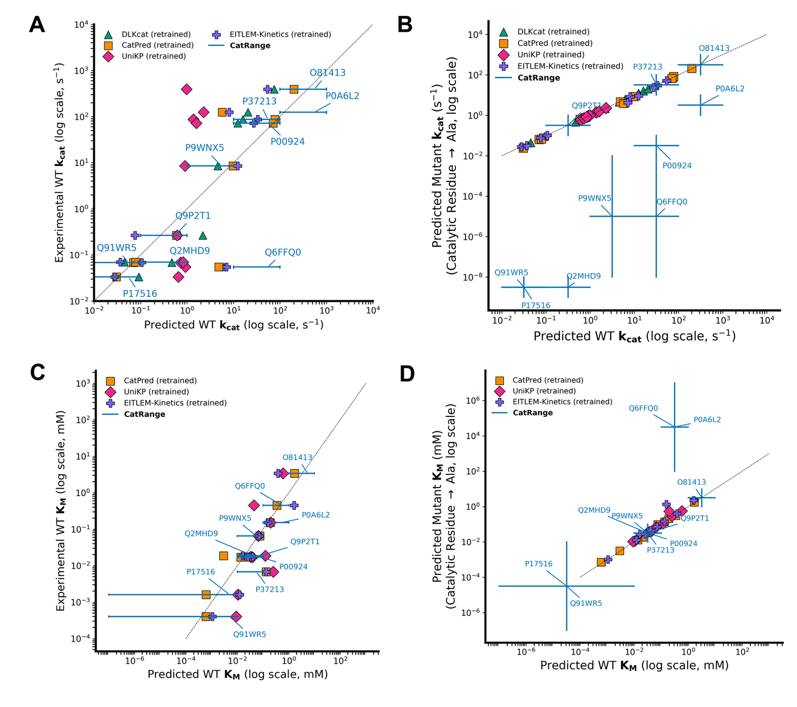

How CatRange takes your input
The same four modes available in the Colab notebook are supported by the lab's hosted queue below.
Demo
Runs the built-in example pairs — the fastest way to see CatRange work end to end.
Interactive
Paste up to 10 sequence/SMILES pairs directly and get ranges back in one pass.
Bulk
Upload a CSV of sequence + Isomeric SMILES columns for batch scoring.
Bulk-large
The same CSV workflow, chunked into batches for large-scale sequence/substrate libraries.
Every mode runs with Mechanistic Mutation-Aware scoring selected by default — the model checkpoint described below that was explicitly trained to notice when a mutation lands on a catalytic residue, rather than just how similar a mutant is to its wild type.
Two ways to get your predictions
Pick whichever fits — both run the identical CLEAN + CatRange pipeline.
Recommended: Google Colab
Free, no queue, and runs on Google's infrastructure under your own account. This is the best starting point for most users.

Alternative: the lab's queue
No Google account needed. The lab's own server runs the same pipeline and hands you back a shareable results link. If the queue is at capacity we tell you immediately and point you back to Colab instead of leaving you waiting.
Evolution of this work
Two generations of models, built to make mutation effects on enzyme kinetics legible to machine learning.
CatLog / KinHub-27k: a curated kinetics landscape
Wild type, mutant, and synthetically inactive sequence–substrate pairs, curated and reconciled against UniProt/PDB annotations, became the shared experimental backbone both models below are trained on. Explore the curated dataset itself in CatLog.
Teaching a classifier what "broken" looks like
The predecessor model, RealKcat, was a binary classifier. To make it sensitive to catalytically relevant mutations — not just sequence drift — the team mutated UniProt-annotated active-site residues to alanine (Ala) across the KinHub-27k sequences, assigning these synthetically inactivated variants a new "Cluster 0". Their experimental KM values were retained, and custom scripts reconciled catalytic-residue positions between PDB and UniProt using sequence-motif spacing to verify and extend the annotations.
Read the RealKcat preprint (bioRxiv, Feb 2025) · RealKcat codebase
From "is it broken?" to calibrated kinetic ranges
CatRange moves beyond a blanket zero-activity label. Because alanine substitution at a catalytic site doesn't uniformly abolish activity across every enzyme, residue, and substrate, the team supplemented CatLog-27k with 5,278 mechanistically guided catalytic-site alanine variants (MDAla) and calibrated their mutation-effect labels using a meta-learner trained on 22 literature-derived in vitro WT–MDAla anchor pairs (kept to ≤60% sequence identity to the training set, and strictly withheld from model fitting). Some anchors showed large drops in kcat, others mainly shifted KM, and some stayed in the same kinetic regime entirely — a realistic, heterogeneous signal that forces CatRange to distinguish truly catalytically consequential mutations from sequence identity alone.
Read the CatRange paper (PNAS Nexus) · CatRange codebase

Deployed as Mechanistic Mutation-Aware mode
That calibrated model is what runs by default in the Colab notebook and the lab's hosted queue above — across all four input modes (Demo, Interactive, Bulk, Bulk-large) — so every prediction benefits from mutation-aware training, not just wild-type accuracy.
Resources
Everything referenced above, in one place.
CatRange paper
Published in PNAS Nexus — the full mutation-aware range-prediction method.
CatRange on GitHub
Source code, trained model access, Colab notebook, and this hosted service.
RealKcat codebase
The predecessor binary-classification model this work evolved from.
CatLog
The curated enzyme-kinetics dataset both models are trained and benchmarked on.
Team
CatRange is developed by the Systems and Synthetic Biology Laboratory (SSB Lab), Department of Chemical and Biomolecular Engineering, University of Nebraska–Lincoln, in collaboration with researchers across Iowa State University and the University of South Florida.
Anna Sajeevan K, Osinuga A, B A, Ferdous S, Shahreen N, Noor MS, Koneru S, Santos-Correa LM, Salehi R, Chowdhury NB, Calderon-Lopez B, Mali A, Saha R, Chowdhury R. Robust Prediction of Enzyme Variant Kinetics with RealKcat. bioRxiv [Preprint]. 2025 Feb 15. doi: 10.1101/2025.02.10.637555. PMID: 39990461 · PMCID: PMC11844551.